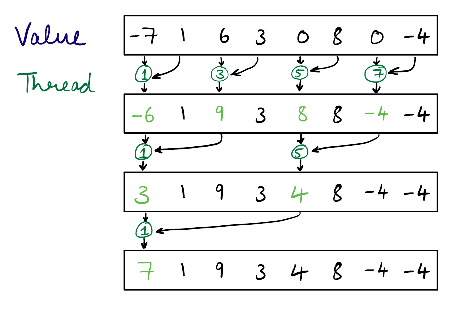
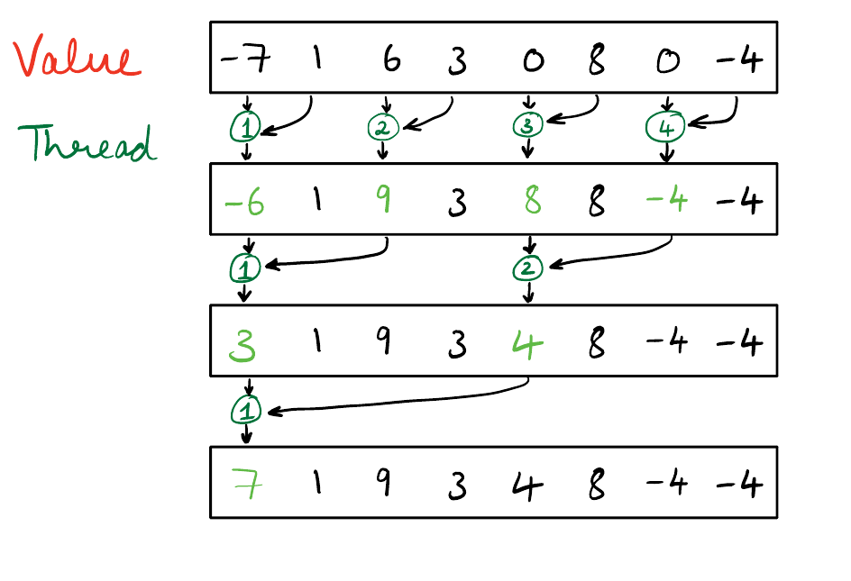

Reduction
The reduce function takes in a binary operator ⊕ and a ordered collection, applying the operator to that collection effectively reducing it to one final value.
For example, the operator ⊕ can be minimum and the collection can be an array of Integers. ⊕ can also be addition or xor and the collection may represent any type of object as long as the operator makes sense in the context.
using CUDA
a = rand(10)10-element Array{Float64,1}:
0.7230095099881184
0.16638704100244883
0.9595290619436863
0.9624943069172827
0.7628593834842048
0.293362503794262
0.8860580664131226
0.6855748945100439
0.7001695020731629
0.7521785598391935reduce(min, a)0.16638704100244883reduce(*, a)0.007954449625853871@doc reduce(*, a)reduce(op, itr; [init])Reduce the given collection itr with the given binary operator op. If provided, the initial value init must be a neutral element for op that will be returned for empty collections. It is unspecified whether init is used for non-empty collections.
For empty collections, providing init will be necessary, except for some special cases (e.g. when op is one of +, *, max, min, &, |) when Julia can determine the neutral element of op.
Reductions for certain commonly-used operators may have special implementations, and should be used instead: maximum(itr), minimum(itr), sum(itr), prod(itr), any(itr), all(itr).
The associativity of the reduction is implementation dependent. This means that you can't use non-associative operations like - because it is undefined whether reduce(-,[1,2,3]) should be evaluated as (1-2)-3 or 1-(2-3). Use foldl or foldr instead for guaranteed left or right associativity.
Some operations accumulate error. Parallelism will be easier if the reduction can be executed in groups. Future versions of Julia might change the algorithm. Note that the elements are not reordered if you use an ordered collection.
Examples
julia> reduce(*, [2; 3; 4])
24
julia> reduce(*, [2; 3; 4]; init=-1)
-24Writing reduce for a CPU is quite straightforward with a single for-loop. We will focus on writing a reduction for a linear array in this tutorial. We will iteratively develop a performant version using everything we have learnt in the previous tutorials.
Reduction 1 : Divide and Conquer
The first step is to write something that works on the GPU. If we were given a dual-core machine and expected to parallelize this we would split the input array into two halves and feed each half into a different CPU. Similarly the best hint is to use the divide-and-conquer approach. By envisioning the reduction process as a binary tree we get:

It would be a good exercise to try to write model the above process in pseudocode.
One such approach is:
The only issue with this approach on the GPU is that after each step we need to synchronize which won't be possible with arrays which span over a single thread block (1024 threads is the maximum threads in a block). Hence, we will have to use a recursive approach.
Assume for now we have $1024$ threads per block and process one element per thread. If we have $2048$ threads then we will run our algorithm with two thread blocks, storing the results in an intermediate array. After our first kernel is done we will perform a reduction on the intermediate array. And if we have an array whose length is greater than $1024^2$ we will have another level of recursion. If there are $1024*1024 + 1$ elements then the $1^{st}$ level of reduction will return an intermediate array of size $1025$ which will take another level of recursion to process.
function reduction1(op, a::CuArray)
threadsPerBlock = 1024
len = length(a)
sums = similar(a, cld(len, threadsPerBlock))
blocks = cld(len, threadsPerBlock)
shmem = sizeof(eltype(a))*threadsPerBlock
@cuda shmem=shmem threads=threadsPerBlock blocks=blocks reduction1_kernel(op, a, sums)
# Recursively call reduction for larger arrays
if length(sums) > 1
return reduction1(op, sums)[1]
end
CUDA.@allowscalar return sums[1]
endreduction1 (generic function with 1 method)function reduction1_kernel(op, a, sums)
shmem = @cuDynamicSharedMem(eltype(a), (blockDim().x, ))
tid = (blockIdx().x - 1) * blockDim().x + threadIdx().x
index = threadIdx().x
len = blockDim().x
# Adjust length for the last block
if blockIdx().x == gridDim().x
len = mod1(length(a), blockDim().x)
end
if tid <= length(a)
shmem[index] = a[tid]
else
return
end
sync_threads()
steps = floor(Int, CUDA.log2(convert(Float32, len)))
for i = 0:steps
if mod(index - 1, 2^(i + 1)) == 0 && (index + 2^i) <= len
shmem[index] = op(shmem[index], shmem[index + 2^i])
end
sync_threads()
end
if index == 1
sums[blockIdx().x] = shmem[1]
end
return
endreduction1_kernel (generic function with 1 method)a = CUDA.ones(1025);
reduction1(+, a)1025.0f0a = CUDA.rand(100_000);
println(reduction1(+, a)," ",reduce(+, a))49962.688 49962.68
The two results above not being exactly equal is expected since IEEE floats are neither associative nor commutative. Since associativity is tough to achieve on a parallel algorithm we can expect some deviation.
Reduction 2 : Strided Index
One problem with the last reduction was divergent branching, for example thread three is active for exactly one computation (a[3] op a[4]) and is never used again. Because GPU's operate warpwise we want to use all the resources of a warp instead of a small subset. When threads in a warp do different things it has diverged and it's efficiency drops. In this case with each iteration half the number of threads go inactive.
A simple fix is to change the way threads map to the elements by using a strided index

function reduction2_kernel(op, a, sums)
shmem = @cuDynamicSharedMem(eltype(a), (blockDim().x, ))
tid = (blockIdx().x - 1) * blockDim().x + threadIdx().x
index = threadIdx().x
len = blockDim().x
# Adjust length for the last block
if blockIdx().x == gridDim().x
len = mod1(length(a), blockDim().x)
end
if tid <= length(a)
shmem[index] = a[tid]
else
return
end
sync_threads()
steps = floor(Int, CUDA.log2(convert(Float32, len)))
for i = 0:steps
stride = 2^i
sindex = 2*stride*(index - 1) + 1
if sindex + stride <= len
shmem[sindex] = op(shmem[sindex], shmem[sindex + stride])
end
sync_threads()
end
if index == 1
sums[blockIdx().x] = shmem[1]
end
return
endreduction2_kernel (generic function with 1 method)function reduction2(op, a::CuArray)
threadsPerBlock = 1024
len = length(a)
sums = similar(a, cld(len, threadsPerBlock))
blocks = cld(len, threadsPerBlock)
shmem = sizeof(eltype(a))*threadsPerBlock
@cuda shmem=shmem threads=threadsPerBlock blocks=blocks reduction2_kernel(op, a, sums)
# Recursively call reduction for larger arrays
if length(sums) > 1
return reduction2(op, sums)
end
CUDA.@allowscalar return sums[1]
endreduction2 (generic function with 1 method)a = CUDA.ones(100_000);
reduction2(+, a)100000.0f0@time CUDA.@sync reduction1(+, a);
@time CUDA.@sync reduction2(+, a);
nothing #hide 0.000451 seconds (73 allocations: 3.406 KiB)
0.000281 seconds (72 allocations: 3.031 KiB)
Reduction 3 : Sequential access
In both the above implementations our memory-access pattern is strided which is difficult to coalesce. We discussed coalesced memory access in the Shared Memory tutorial.
TL;DR When consecutive threads access consecutive locations in memory, the GPU combines several transactions into a fewer transactions which is called coalesced memory access. When memory accesses are not consecutive which happens when the locations are non-sequantial, sparse or misaligned the GPU hardware is unable to reduce the number of transactions. Since transactions are serviced sequentially there is a significant performance penalty for non-coalesced access.
To make use of sequantial access instead of stride iterating from 1 to length ÷ 2 we can do it the other way around (length ÷ 2:1)
NOTE: The algorithm below assumes that the blockDim is a power of two. Transforming it to become friendly with non-power of two can be done as an exercise.
function reduction3_kernel(op, a, sums)
shmem = @cuDynamicSharedMem(eltype(a), (blockDim().x, ))
tid = (blockIdx().x - 1) * blockDim().x + threadIdx().x
index = threadIdx().x
len = blockDim().x
# Adjust length for the last block
if blockIdx().x == gridDim().x
len = mod1(length(a), blockDim().x)
end
if tid <= length(a)
@inbounds shmem[index] = a[tid]
else
return
end
sync_threads()
stride = len ÷ 2
while stride > 0
if index <= stride && index + stride <= len
shmem[index] = op(shmem[index], shmem[index + stride])
end
stride = stride ÷ 2
sync_threads()
end
if index == 1
@inbounds sums[blockIdx().x] = shmem[1]
end
return
endreduction3_kernel (generic function with 1 method)function reduction3(op, a::CuArray)
threadsPerBlock = 1024
len = length(a)
sums = similar(a, cld(len, threadsPerBlock))
blocks = cld(len, threadsPerBlock)
shmem = sizeof(eltype(a))*threadsPerBlock
@cuda shmem=shmem threads=threadsPerBlock blocks=blocks reduction3_kernel(op, a, sums)
# Recursively call reduction for larger arrays
if length(sums) > 1
return reduction3(op, sums)[1]
end
CUDA.@allowscalar return sums[1]
return sums
endreduction3 (generic function with 1 method)a = CUDA.ones(1024);
reduction3(+, a)1024.0f0a = CUDA.ones(Int, 1024 * 1024);
reduction3(+, a)1048576CUDA.@time reduction2(+, a);
CUDA.@time reduction3(+, a);
nothing #hide 0.806616 seconds (771.02 k CPU allocations: 38.272 MiB, 0.88% gc time) (2 GPU allocations: 8.008 KiB, 0.01% gc time of which 46.73% spent allocating)
0.000311 seconds (68 CPU allocations: 2.922 KiB) (2 GPU allocations: 8.008 KiB, 7.17% gc time of which 71.49% spent allocating)
Reduction 4 : Warp Shuffle
A powerful feature in modern GPUs is the ability to communicate within warps with the help of special instructions. Currently we transfer data with the help of shared memory which obviously requires sync_threads() and access to shared memory. Warp shuffle functions allow transferring memory within a warp without the use of shared memory also being much faster and not requiring any explicit barrier. The only drawback is that only the following primitive types are supported: Int32, UInt32, Int64, UInt64, Float32, Float64 and any arbitrary source to destination lane mapping is not permitted.
There are four shuffle methods.
shfl_syncshfl_up_syncshfl_down_syncshfl_xor_sync
@doc shfl_syncshfl_sync(threadmask::UInt32, val, lane::Integer, width::Integer=32)Shuffle a value from a directly indexed lane lane, and synchronize threads according to threadmask.
shfl_sync acts as a broadcast transferring a lane's value to all other lane.
function broadcast_gpu(lane)
id = threadIdx().x
val = id
mask = typemax(UInt32) # 0xffffffff
newval = shfl_sync(mask, val, lane)
@cuprint("id: ", id, "\t value: ", val, "\t new value: ", newval, "\n")
return
end
@cuda threads=32 blocks=1 broadcast_gpu(19)shfl_up_sync and shfl_down_sync copy the value from lane = current_lane ± delta. If lane is out of bounds from the warp then
@doc shfl_down_syncshfl_down_sync(threadmask::UInt32, val, delta::Integer, width::Integer=32)Shuffle a value from a lane with higher ID relative to caller, and synchronize threads according to threadmask.
function shfldown_gpu(delta)
id = threadIdx().x
val = id
mask = typemax(UInt32) # 0xffffffff
newval = shfl_down_sync(mask, val, delta)
@cuprint("id: ", id, "\t old value: ", val, "\t new value: ", newval, "\n")
return
end
@cuda threads=32 blocks=1 shfldown_gpu(2)
synchronize()id: 1 value: 1 new value: 19
id: 2 value: 2 new value: 19
id: 3 value: 3 new value: 19
id: 4 value: 4 new value: 19
id: 5 value: 5 new value: 19
id: 6 value: 6 new value: 19
id: 7 value: 7 new value: 19
id: 8 value: 8 new value: 19
id: 9 value: 9 new value: 19
id: 10 value: 10 new value: 19
id: 11 value: 11 new value: 19
id: 12 value: 12 new value: 19
id: 13 value: 13 new value: 19
id: 14 value: 14 new value: 19
id: 15 value: 15 new value: 19
id: 16 value: 16 new value: 19
id: 17 value: 17 new value: 19
id: 18 value: 18 new value: 19
id: 19 value: 19 new value: 19
id: 20 value: 20 new value: 19
id: 21 value: 21 new value: 19
id: 22 value: 22 new value: 19
id: 23 value: 23 new value: 19
id: 24 value: 24 new value: 19
id: 25 value: 25 new value: 19
id: 26 value: 26 new value: 19
id: 27 value: 27 new value: 19
id: 28 value: 28 new value: 19
id: 29 value: 29 new value: 19
id: 30 value: 30 new value: 19
id: 31 value: 31 new value: 19
id: 32 value: 32 new value: 19
id: 1 old value: 1 new value: 3
id: 2 old value: 2 new value: 4
id: 3 old value: 3 new value: 5
id: 4 old value: 4 new value: 6
id: 5 old value: 5 new value: 7
id: 6 old value: 6 new value: 8
id: 7 old value: 7 new value: 9
id: 8 old value: 8 new value: 10
id: 9 old value: 9 new value: 11
id: 10 old value: 10 new value: 12
id: 11 old value: 11 new value: 13
id: 12 old value: 12 new value: 14
id: 13 old value: 13 new value: 15
id: 14 old value: 14 new value: 16
id: 15 old value: 15 new value: 17
id: 16 old value: 16 new value: 18
id: 17 old value: 17 new value: 19
id: 18 old value: 18 new value: 20
id: 19 old value: 19 new value: 21
id: 20 old value: 20 new value: 22
id: 21 old value: 21 new value: 23
id: 22 old value: 22 new value: 24
id: 23 old value: 23 new value: 25
id: 24 old value: 24 new value: 26
id: 25 old value: 25 new value: 27
id: 26 old value: 26 new value: 28
id: 27 old value: 27 new value: 29
id: 28 old value: 28 new value: 30
id: 29 old value: 29 new value: 31
id: 30 old value: 30 new value: 32
id: 31 old value: 31 new value: 31
id: 32 old value: 32 new value: 32
We can use shfl_down_sync to reduce a warp much faster than shared memory.
@inline function reducewarp(op, val, mask = typemax(UInt32))
val = op(val, shfl_down_sync(mask, val, 1))
val = op(val, shfl_down_sync(mask, val, 2))
val = op(val, shfl_down_sync(mask, val, 4))
val = op(val, shfl_down_sync(mask, val, 8))
val = op(val, shfl_down_sync(mask, val, 16))
return val
end
function reduction4_kernel(op, a, sums)
tid = (blockIdx().x - 1) * blockDim().x + threadIdx().x
lane_id = tid % 32
warp_id = cld(tid, 32)
# exit
tid > length(a) && return
# set essential
tid <= length(a) && (val = a[tid])
val = reducewarp(op, val)
lane_id == 1 && (sums[warp_id] = val)
return
end
function reduction4(op, a::CuArray)
threadsPerBlock = 1024
len = length(a)
sums = similar(a, cld(len, 32))
blocks = cld(len, threadsPerBlock)
shmem = sizeof(eltype(a))*threadsPerBlock
@cuda threads=threadsPerBlock blocks=blocks reduction4_kernel(op, a, sums)
# Recursively call reduction for larger arrays
if length(sums) > 1
return reduction4(op, sums)
end
CUDA.@allowscalar return sums[1]
return sums
endreduction4 (generic function with 1 method)a = CUDA.ones(Int, 320_000)
reduction4(+, a)320000There is one big problem with our implementation, the input length is expected to be a multiple of 32. This problem can be solved either by defining a neutral element for op (zero(eltype(a)) for +, one(eltype(a)) for *) however this won't work with xor. Another is to force the last warp's computation via shared memory like earlier examples. We correct this by having only 1 thread work for the last warp; this is a simple solution that is inefficient but when the number of warps is large the performance hit shouldn't be too high.
function reduction5_kernel(op, a, sums)
tid = (blockIdx().x - 1) * blockDim().x + threadIdx().x
lane_id = tid % 32
warp_id = cld(tid, 32)
# exit non essential
tid > cld(length(a), 32)*32 && return
# set essential
tid <= length(a) && (val = a[tid])
# Manage last warp
if warp_id*32 > length(a)
if lane_id == 1
for i=(tid + 1):length(a)
val = op(val, a[i])
end
end
else
val = reducewarp(op, val)
end
lane_id == 1 && (sums[warp_id] = val)
return
end
function reduction5(op, a::CuArray)
threadsPerBlock = 1024
len = length(a)
sums = similar(a, cld(len, 32))
blocks = cld(len, threadsPerBlock)
shmem = sizeof(eltype(a))*threadsPerBlock
@cuda threads=threadsPerBlock blocks=blocks reduction5_kernel(op, a, sums)
# Recursively call reduction for larger arrays
if length(sums) > 1
return reduction5(op, sums)
end
CUDA.@allowscalar return sums[1]
return sums
endreduction5 (generic function with 1 method)a = CUDA.ones(Int, 5_000_000)
reduction5(+, a)5000000@time CUDA.@sync reduction3(+, a);
@time CUDA.@sync reduction5(+, a);
nothing #hide 0.001485 seconds (101 allocations: 4.344 KiB)
0.000761 seconds (171 allocations: 6.984 KiB)